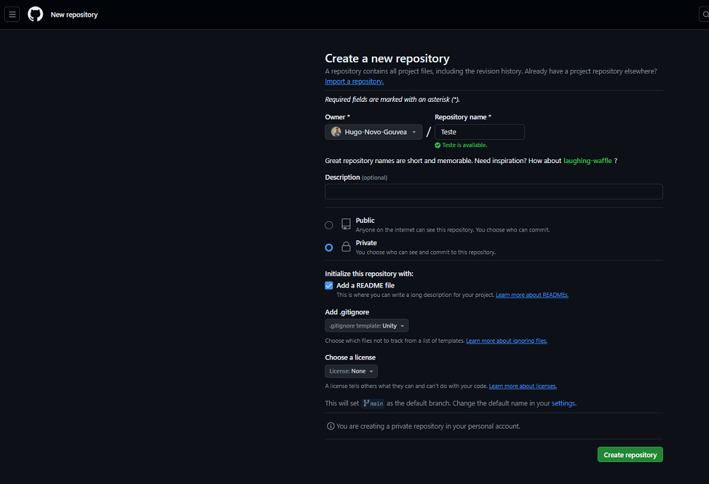
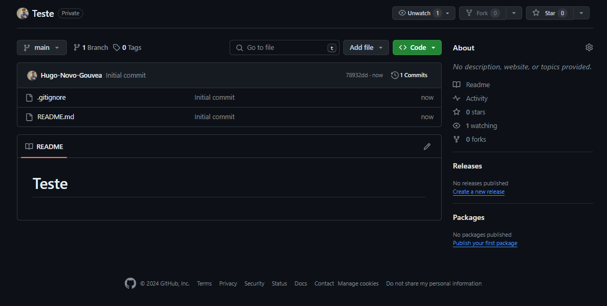
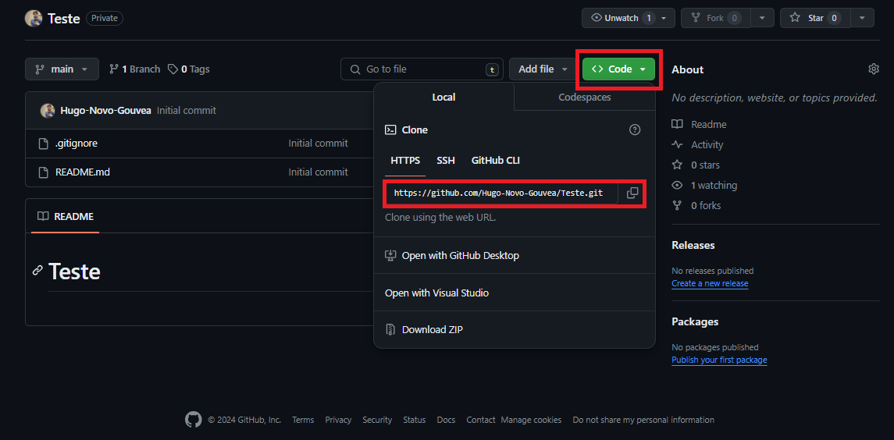
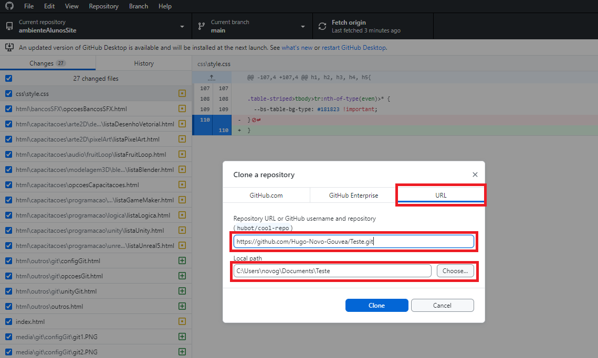
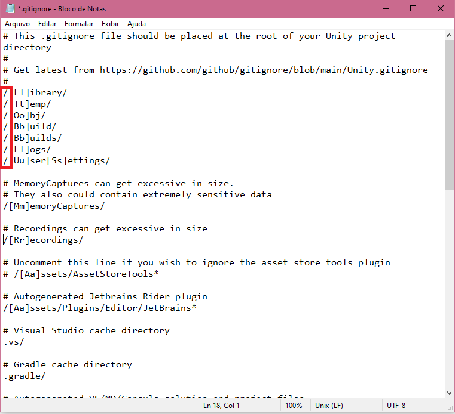
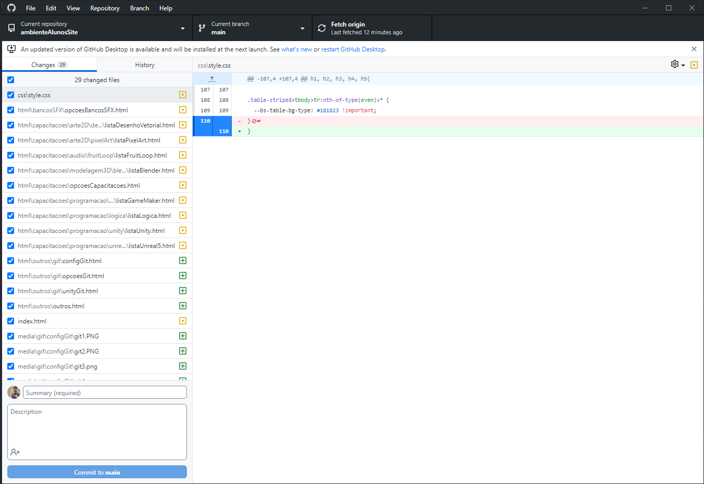
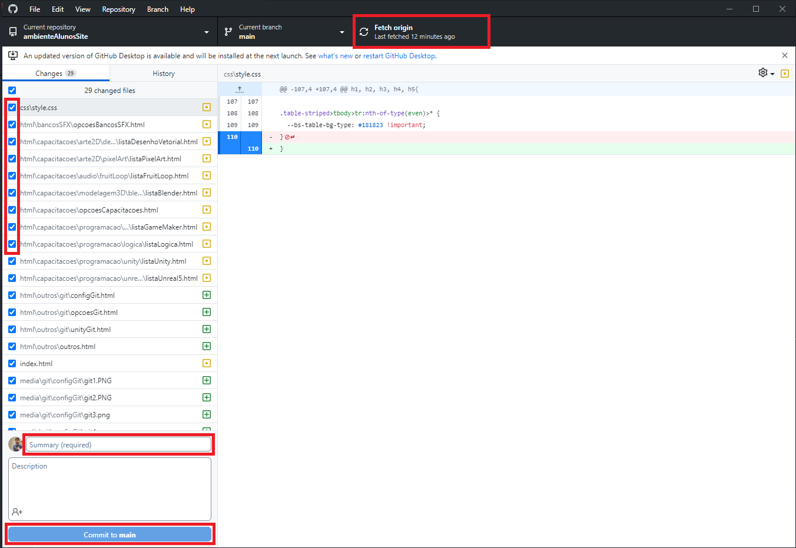
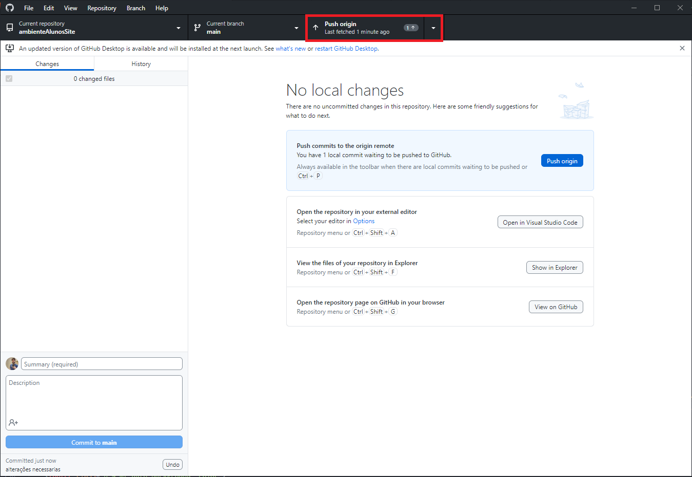

Usando Github Desktop no Unity
1. Instalando o Github Desktop
Clique Aqui para acessar o site do Github Desktop
Faça o Download e execute o Github Desktop e faça o login utilizando seu email e senha do Github
2. Criando um repositorio no Github
Volte para o Github e crie um repositório, repositórios são onde ficaram armazenados os arquivos dos seus projetos

Coloque o nome do seu repositório, um descrição se quiser, marque publico caso queira que outras pessoas vejam seu repositório ou privado caso não, marque a caixa
de "Add a README file", isso irá criar um arquivo txt chamado README que é usado para colocar observações e informações do seu repositório e a parte mais importante,
no "Add gitignore" procure pela opção "Unity", na licensa deixe como "None" e então clique em "Create Repository"
Pronto, repositório criado!!!

3. Clonando o repositório em seu desktop utilizando o Github Desktop
Em seu repositório selecione a opção "<> Code", um link HTTPS será exibido

Copie esse link
Volte para o Github Desktop, vá em "File" na barra superior de opção e selecione "Clone repository" ou use o comando "Ctrl + shift + O"

Selecione o opção "URL", informe a ULR que você copiou no seu github quando clicou no botão "<> Code" e escolha o caminho do repositório
criado no seu desktop
Tudo que for adicionado dentro desse repositório poderá ser enviado para o seu github, crie o projeto Unity dentro desse repositório e para cada novo projeto
você precisará criar um novo repositório no github.
4. configurando o gitignore
Vá até o repositório que você acabou de clonar em sua maquina e localize o arquivo .gitignore, abra ele usando o bloco de notas

Apague essas "/" marcadas na imagem e salve o arquivo
5. Usando o github desktop
No github desktop você pode ver todas as atualizaçõs, adições e exclusões de arquivos que foram feitas dentro do repositório em seu desktop, tambem conhecido
como repositório local

Imagem apenas de exemplo
Para adicionar um arquivo no repositório no seu github atraves do github desktop você precisa...

Pressione o Fetch Origin na parte superior se ele estiver aparecendo para sincronizar com seu github e procurar possiveis alterações, em seguida marque a
caixinha dos itens que quer enviar para o github, escreva um sumario explicando a ação que esta sendo feita e em seguida pressione o botão de "commit to main"

Por fim selecione a opção de "Push Origin" e os arquivos serão enviados!!!!